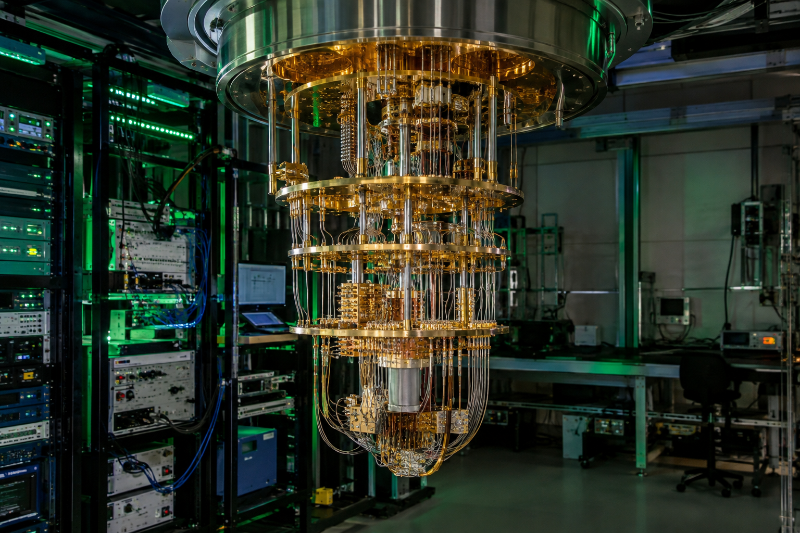
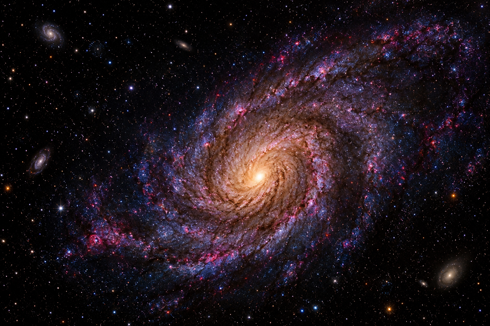
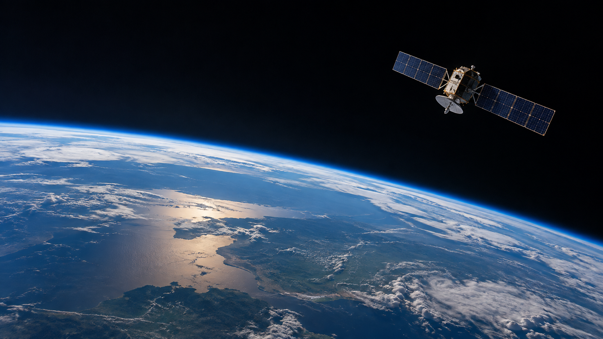
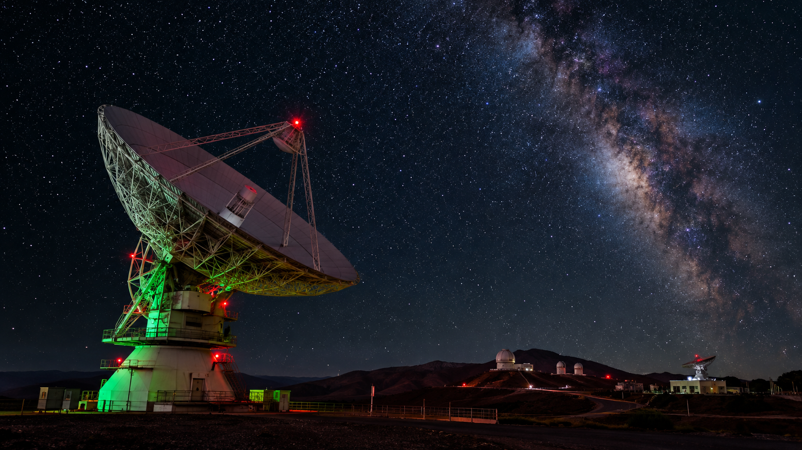

Artificial Intelligence & ML
Deep learning, self-supervised learning, reinforcement learning, multimodal AI, generative AI generative models, Scientific AI and physics-informed machine learning.
Research
Electronics & Instrumentation Engineering graduate exploring Artificial Intelligence, Quantum Information Science, Scientific Computing, and physics.

ABOUT
I am an Electronics & Instrumentation Engineering graduate with a longstanding interest in physics, exploring the intersection of artificial intelligence, machine learning, quantum information science, and scientific computing.
My interest in physics began during my school education, where I studied physics throughout my secondary and higher-secondary years. During my undergraduate studies in Electronics and Instrumentation Engineering, that interest continued alongside my growing interest in Artificial Intelligence, Machine Learning, and Quantum Computing. Through my engineering projects and research experiences, I have explored areas including deep learning, computer vision, scientific data analysis, quantum computing, quantum error correction, and quantum machine learning.
I am now interested in bringing these interests together — Physics, Artificial Intelligence, and Quantum Information Science — while developing a deeper academic foundation in physics and exploring how modern computational and quantum approaches can be applied to scientific problems.
Deep learning, computer vision, Gen AI, reinforcement learning, multimodal AI, scientific AI
QIS, QML, QEC, Quantum computing, Quantum communication and quantum sensing
Scientific data analysis, simulation, computational methods, and AI-driven approaches to scientific problems.
IoT, embedded systems, instrumentation, sensor data analytics, intelligent sensing, space systems, astrodynamics, rocket propulsion, space-environment thermodynamics, and guidance, navigation, and control (GNC).
Quantum mechanics, electromagnetism, thermodynamics, relativity, atomic and nuclear physics, astrophysics, and cosmology.


RESEARCH INTERESTS
Deep learning, self-supervised learning, reinforcement learning, multimodal AI, generative AI generative models, Scientific AI and physics-informed machine learning.
Visual learning, image understanding, scientific computer vision, astronomical imaging, ecological applications, remote sensing, and real-world intelligent sensing.
Quantum computing and simulation, quantum machine learning, quantum error correction, quantum noise and channels, Kraus operators, quantum communication and networking, quantum sensing, and quantum information theory.
Scientific data analysis, simulation, numerical and computational methods, quantitative modeling, and data-driven approaches to complex scientific systems across physics, astronomy, biology, environmental science, and other scientific domains.
IoT, edge intelligence, embedded systems, instrumentation, sensor data analytics, intelligent communication systems, autonomous systems, and space systems.
Areas of interest include astrodynamics and orbital motion, rocket propulsion, space-environment thermodynamics, and guidance, navigation, and control (GNC).A growing academic interest in the foundations and applications of physics, including quantum mechanics, electromagnetism, thermodynamics, relativity, atomic physics, nuclear physics, particle physics, astrophysics, and cosmology. Electromagnetism Relativity Quantum Mechanics Thermodynamics Astrophysics
Neural machine translation, SLAM, geometric deep learning, graph neural networks, neuro-symbolic systems, TinyML and modern generative AI.
EXPERIENCE

Represented approximately 60 students while coordinating communication between students, faculty and department administration.
Contributed to departmental technical activities and coordination involving more than 50 students.
Conducted interdisciplinary research across AI/ML, computer vision, quantum computing, and scientific computing.
SELECTED PROJECTS
Explored 3-qubit and 7-qubit quantum error-correction approaches for mitigating noise and decoherence in deep-space communication scenarios.
View Project ↗Investigated quantum noise using Kraus operators, density matrices and neural-network-based parameter learning.
Applied convolutional neural networks to classify astronomical galaxy morphology from image data.
Explored deep learning approaches for protein structure-related prediction using biological sequence data.
Investigated machine-learning approaches for modeling species distributions using environmental and geographic variables.
Developed a CNN-based facial emotion recognition model and used Grad-CAM for visual interpretation.
Built an ESP32-based environmental monitoring system with sensor acquisition and cloud-connected visualization.
Completed undergraduate coursework and introductory project work exploring fundamental concepts of electric and magnetic fields, electromagnetic phenomena, and their applications to physical and engineering systems.
Completed undergraduate coursework and introductory project work exploring heat, work, energy, thermodynamic systems, and fundamental thermodynamic processes.
Explored intelligent sensing and automated radar-control concepts using embedded and AI-based approaches.

EDUCATION
Kattankulathur, Tamil Nadu, India
Thuraiyur, Tamil Nadu, India
SKILLS
Python · C · C++ · R
Programming for machine learning, scientific computing, data analysis, and engineering applications.TensorFlow · PyTorch · scikit-learn · CNNs · Deep Learning
Machine learning, deep learning, neural networks, and scientific AI.NumPy · Pandas · Matplotlib · MATLAB · Seaborn
Scientific data processing, statistical analysis, visualization, and exploratory data analysis.OpenCV · Image Processing · Grad-CAM · CNNs
Image processing, visual learning, image classification, and model interpretation.Qiskit · Cirq · PennyLane · QEC · Kraus Operators · Quantum Noise
Quantum circuits, quantum simulation, quantum error correction, quantum channels, and quantum noise analysis.Git · GitHub · Jupyter Notebook · IBM Quantum
Version control, research notebooks, computational experimentation, and quantum-computing platforms.
AWARDS & RECOGNITION
Academic scholarship recognition during undergraduate study.
Served as class representative and supported student-faculty coordination.
Interested in AI, quantum information, scientific computing, intelligent sensing, or interdisciplinary research?